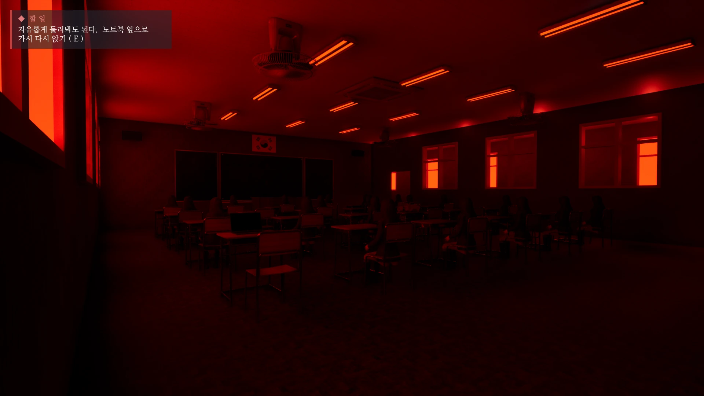
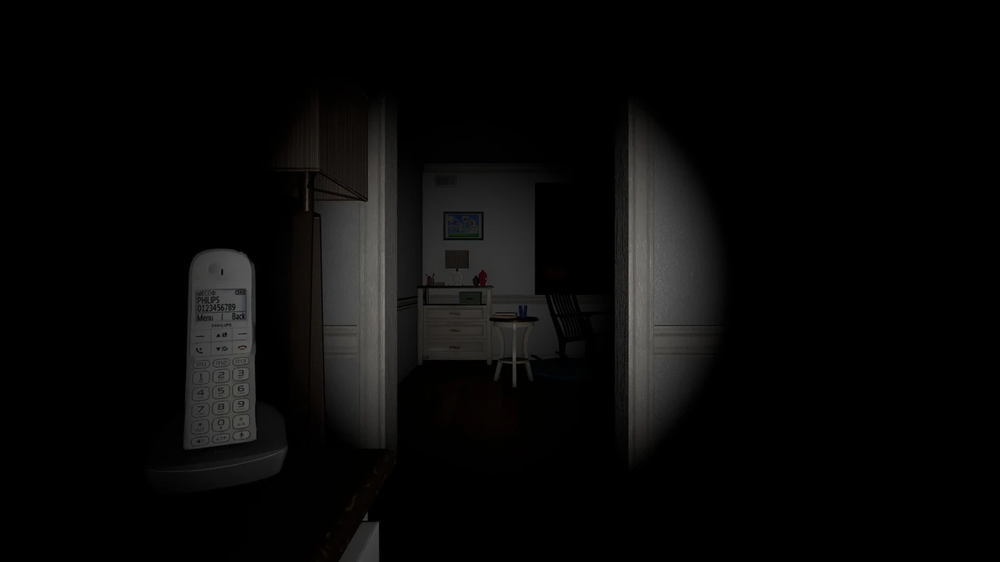
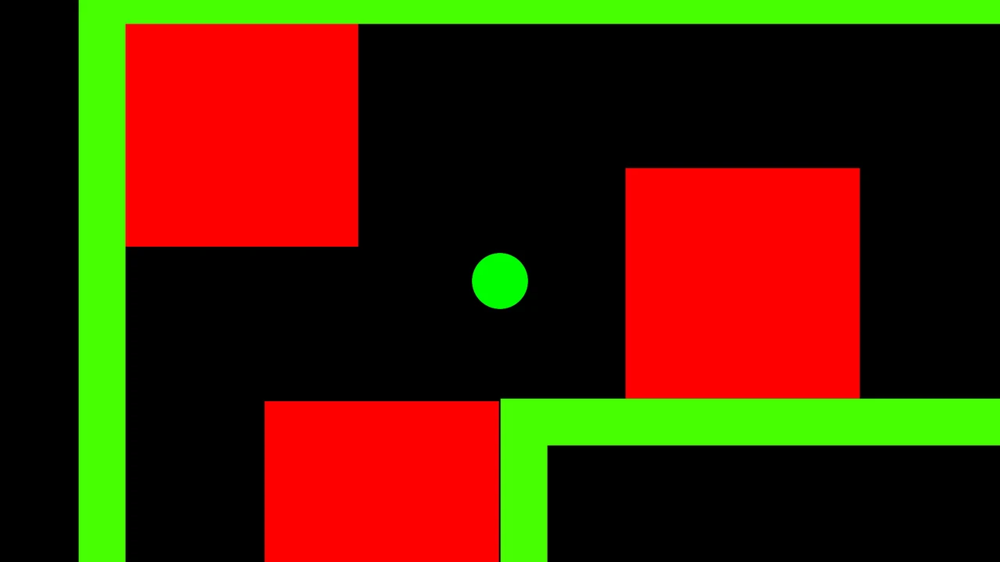
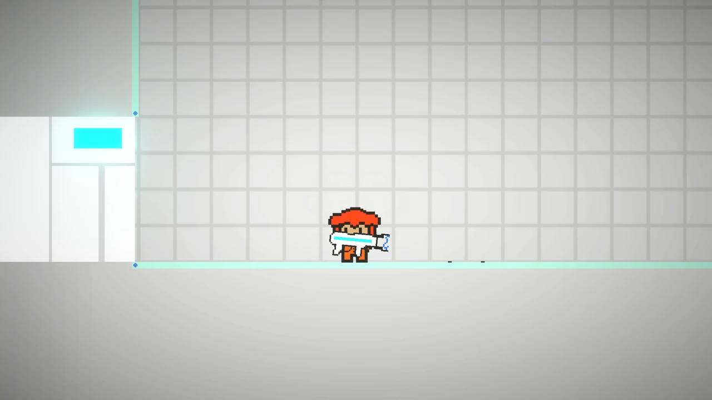

개발 중 / 2026PROJECT / 01
사용금지
5인 팀의 팀장·프로그래밍. 학교의 규칙과 이상 현상을 연결하는 1인칭 공포 게임.
기획과 구현, 그리고 출시.
플레이 경험의 전체 과정을 연결합니다.
RAMIC STUDIO 설립
상업 게임 출시 경험
게임플레이 · 인터랙션 개발
실제로 구현하고, 출시하고, 검증한 경험.
각 프로젝트에서 맡은 역할과 제작 과정을 소개합니다.

개발 중 / 20265인 팀의 팀장·프로그래밍. 학교의 규칙과 이상 현상을 연결하는 1인칭 공포 게임.

Steam 출시 / 20265일 밤의 생존을 설계하다. 유령 AI 구현부터 출시 후 업데이트까지 이어지는 서바이벌 호러.

Steam · STOVE / 2024해킹 퍼즐과 탄막 회피의 만남. 개발과 출시를 거쳐 2024년 12월 STOVE 판매량 8위.

Steam · STOVE / 2023–24다양한 기믹을 탐색하는 퍼즐 플랫포머. 오브젝트 동작과 내러티브를 연결하고 스토어에 배포.
잡고, 놓고, 진열하는 자연스러운 경험. 인터랙션과 시각적 연출을 분리해 위치 오류를 해결.
상태 전이로 구현한 NPC. 개체 수별 FPS 측정을 통해 게임 AI의 성능 변화를 분석.
기술은 이름보다 쓰임으로.
프로젝트에서 경험한 역량을 이야기합니다.
Unity·C#과 Unreal·C++로 게임 진행, FSM 기반 NPC, 퍼즐과 UI를 구현합니다. VR에서는 물체 잡기와 진열 상호작용을 다룹니다.
사용금지 · No Place Like Home · CRC ↗NPC 개체 수에 따른 성능 변화를 측정하고 상태 전이를 분석했습니다. 인터랙션 오류의 원인을 찾고 연출과 동작을 분리해 해결합니다.
FSM 연구 · VR 인터랙션 ↗RAMIC STUDIO를 운영하며 개발과 스토어 배포를 경험했습니다. 현지화와 오류 수정, 출시 후 업데이트를 진행하고 AI 제작 흐름을 검증합니다.
Steam · STOVE · AI-assisted Development ↗ HAKJU LEE / 이학주
HAKJU LEE / 이학주순천향대학교 메타버스&게임학과에서 공부하며, 2022년 설립한 RAMIC STUDIO를 운영하는 이학주입니다. Unity 게임 개발과 출시를 시작으로 Unreal 프로젝트, VR 인터랙션, AI를 활용한 제작까지 경험을 넓혀가고 있습니다.
AI 제작 실험부터 수상과 교외 활동까지.
[프로젝트] Unity·Photon을 사용하는 1–4인 협동 추리 게임이자, AI가 Unity·Blender를 조작하는 제작 흐름을 실험한 프로젝트입니다.
[역할] AI 개발 디렉팅, 코드 리뷰·구현 감수, WebGL 배포와 멀티플레이 통합 QA를 담당했습니다. 코드·씬·절차적 에셋 제작에는 AI 에이전트가 참여했으며, 사람과 AI의 역할을 공개 문서에서 구분했습니다.
[프로젝트] 물리 기반 이동과 콤보 점수를 결합한 액션 게임입니다.
[설계] 킬 수에 멀티킬 보너스와 스타일 점수를 결합하여, 위험을 감수하는 플레이에 보상을 주는 점수 구조를 설계했습니다.
2025 SCHU AI·SW Festival 게임개발경진대회 최우수상 수상
[아이디어] 기존 가드레일 하단에 볼트 체결 방식으로 부착하는 확장형 교통 안전 패널(A.U.P, Anti-Underride Panel)을 제안했습니다.
[목표] 기존 인프라를 활용해 언더라이드 사고 위험을 줄이는 방안을 기획하고, B2G·B2B 적용 가능성을 검토했습니다.
순천향대학교 제1회 로컬 창업동아리 아이디어 리그 START-UP Track-1 은상 수상.
[활동] 순천향대학교 G-LAMP 사업단의 서포터즈로 기초과학 연구 성과를 대중에게 전달하는 홍보 콘텐츠를 기획·제작했습니다.
[기간] 2026년 5월 13일 ~ 8월 13일 상반기 활동.
2026년 9월 11일 발급된 G-LAMP 서포터즈 활동증명서를 아래에서 확인할 수 있습니다.
게임 개발과 새로운 협업 이야기를 기다립니다.
아이디어와 기회를 편하게 전해주세요.
[프로젝트] 규칙을 해석하고 학교의 이상 현상을 탐색하는 1인칭 공포 게임입니다.
[역할] 5인 팀 ‘사용금지’의 팀장·프로그래밍을 맡아 Unreal Engine 5.7과 C++로 게임 진행, 상호작용, UI를 개발하고 있습니다.
[현재] 개발 빌드는 동아리방 프롤로그, 1교시 듣기평가, 2교시 Wi-Fi 비밀번호 퍼즐까지 구현했습니다. 공개 체험판과 최신 개발 빌드의 범위는 다르며, 지스타 2026 시연을 준비하고 있습니다.
[프로젝트] 5일 밤 동안 유령의 공격을 막아내며 생존하는 서바이벌 호러 게임입니다. Ce_r4mic과 협업 개발하여 2026년 7월 16일 Steam에 출시했습니다.
[개발] Unity와 C#으로 유령 AI 행동 패턴을 FSM으로 구성했습니다. 출시 후에는 한국어 텍스트·메뉴 지원, 저장·메뉴 오류 수정, 몬스터 효과음 개선을 포함한 업데이트를 진행했습니다.
[프로젝트] 해킹 퍼즐과 탄막 회피를 결합한 게임입니다.
[개발] Unity와 C#으로 퍼즐 규칙과 실시간 장애물 동작을 구현하고 Steam·STOVE에 출시했습니다.
2024년 12월 STOVE 상품 판매량 8위
[프로젝트] 스테이지마다 다른 기믹을 탐색하는 액션 플랫포머 퍼즐 게임입니다.
[개발] 오브젝트 동작, 퍼즐 진행, 게임 속 내러티브를 연결하고, 개발부터 스토어 배포까지 진행했습니다.
Steam · STOVE 출시
[역할] 순천향대학교 CRC 센터 기능팀 인턴으로 Unity VR 콘텐츠의 보상·물체 잡기·진열 상호작용을 통합했습니다.
[문제 해결] 등장 연출 중 루트 크기가 변하면서 물체를 잡을 때 위치가 튀는 문제를 분석했습니다. 상호작용 루트의 크기를 유지하고 시각적 자식에만 연출을 적용하도록 분리했으며, 메시 바닥과 선반 슬롯을 기준으로 진열 위치를 맞췄습니다.
[구현] Unity와 C#으로 거리에 따라 추격·공격 상태를 전환하는 FSM 기반 NPC를 구현했습니다.
[분석] NPC 개체 수를 달리하며 각 조건에서 60초 동안 FPS를 측정해 성능 변화를 분석했습니다. 구현 환경과 상태 전이 의사코드를 정리하고 계층형 FSM 등을 후속 연구 방향으로 제안했습니다. 개체 수에 따른 분석이며, 최적화 구현과 일반 구현의 비교 실험은 포함하지 않습니다.
2025 한국디지털콘텐츠학회 하계종합학술대회 동상 수상